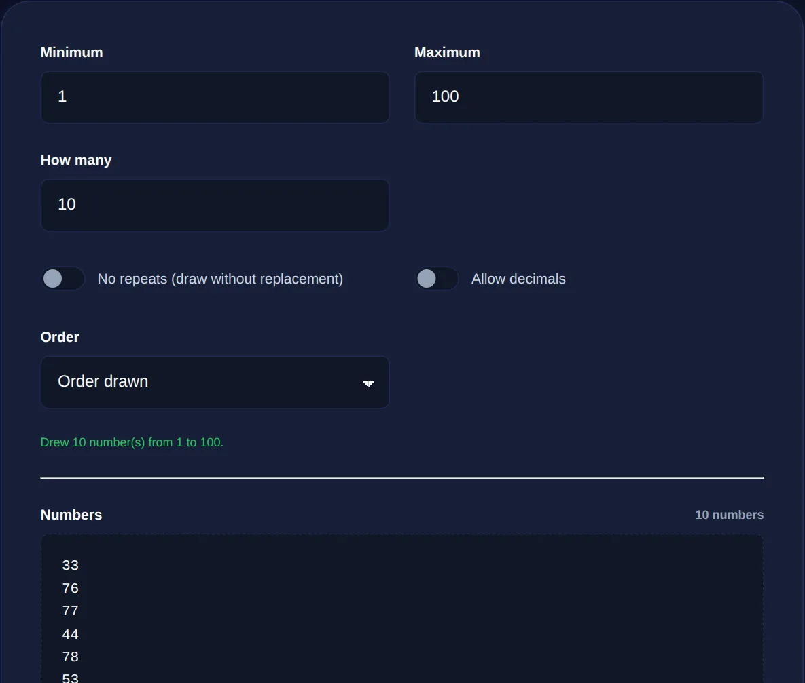

How to Generate Truly Random Numbers (and Why Math.random Isn't Enough)
The difference between pseudo-random and cryptographic randomness, why it matters, and how to pick a fair number.
By Mubasher Hussain · Published 2026-07-31 · Updated 2026-09-01 · 1035 words · about 5 minute read
"Pick a random number" sounds trivial, but there is real depth to doing it well. Computers cannot be truly spontaneous, so they use algorithms to produce numbers that look random, and the quality of those algorithms ranges from "fine for a game" to "safe for cryptography." The Random Number Generator draws on your browser's high-quality randomness to produce fair numbers in any range you choose, and this article explains the difference between kinds of randomness and why it matters.
Whether you are picking a raffle winner, choosing a sample, or generating a secret, understanding where randomness comes from, and the subtle bias that can creep in, helps you trust the result.
Pseudo-random versus true randomness
Most everyday randomness in software is pseudo-random: an algorithm starts from a seed value and produces a sequence of numbers that appears random but is entirely determined by that seed. Give the same seed and you get the same sequence, which is why it is called pseudo-random. This is perfectly adequate for shuffling a playlist or moving a game character. True randomness, by contrast, draws on genuinely unpredictable physical sources, electrical noise, timing jitter and other entropy your operating system collects, so the output cannot be reproduced or predicted even if you know everything about the software.

Why the difference matters
For casual uses, pseudo-random is fine and no one is harmed if it is imperfect. The stakes change entirely when randomness protects something. If a password, a token or an encryption key is generated with a weak, predictable pseudo-random source, an attacker who can guess or reconstruct the sequence can reproduce the secret. This is not hypothetical, real security breaches have come from predictable randomness. That is why sensitive values must use a cryptographically secure random source, one designed so that even seeing many outputs gives no useful clue about the next.
The classic Math.random found in browsers is a pseudo-random generator built for speed, not security. It is fine for games and shuffles but must never generate passwords, tokens or keys. For those, use the browser's cryptographic randomness, which is exactly what secure tools rely on.
The hidden trap: modulo bias
Even with a perfect source of random bits, a subtle mistake can make results unfair. The naive way to get a number in a range, take a big random number and use the remainder after dividing by the range size, introduces a slight bias, because the range rarely divides the pool of random values evenly. Some outcomes end up marginally more likely than others. For a coin flip it is invisible; for a large raffle or a scientific sample it is a real flaw. The fix, called rejection sampling, discards the small unfair remainder and draws again, guaranteeing every outcome is equally likely. Good generators do this automatically.
Getting a genuinely fair number
Producing a fair random number in a range therefore requires two things: a high-quality source of randomness, and a method of mapping it to your range without introducing bias. A well-built generator uses the browser's cryptographically secure randomness and applies rejection sampling so that every value from your minimum to your maximum has exactly the same chance. When you need several numbers, whether repeats are allowed matters too, a raffle draws unique winners, while dice rolls can repeat, so a good tool lets you choose.
- Decide your range, the minimum and maximum, inclusive.
- Decide whether repeats are allowed (dice) or not (drawing unique winners).
- Use a source and method that avoid modulo bias for genuine fairness.
- For anything security-related, insist on cryptographic randomness.
Generate fair random numbers in any range, with or without repeats, using your browser's secure randomness, entirely on your device.
Randomness across the tools
The same principles run through every tool that relies on chance. A dice roller and a random picker both need unbiased selection to be trustworthy, and a password generator depends absolutely on cryptographic randomness for the secrets it produces. In each case the goal is the same: outcomes that are genuinely unpredictable and genuinely fair, with no hidden weighting toward particular results.
Where randomness comes from on your device
It is worth knowing where a computer actually finds unpredictability, since the machine itself is deterministic. Operating systems maintain what is called an entropy pool, gathered from genuinely unpredictable physical events: the precise timing of keystrokes and mouse movements, tiny variations in hardware activity, network and disk timings, and dedicated hardware random-number generators built into modern processors. These sources are combined and mixed to produce high-quality random bits that even an attacker observing the system cannot predict. When your browser provides cryptographically secure randomness, it is drawing on this operating-system entropy rather than a simple formula.
This is the crucial difference from a plain pseudo-random generator, which starts from a single seed and unrolls a predictable sequence. A cryptographic generator is regularly refreshed from the entropy pool and is designed so that its past outputs reveal nothing about its future ones. For the tools that matter, generating passwords, keys and tokens, this is exactly the property you need, and it is why a browser-based generator that uses the secure source is trustworthy for sensitive values while one built on the basic pseudo-random function is not. The reassuring part is that you do not have to manage any of this yourself: choosing a tool that uses the secure source means the deep machinery of entropy collection is already working on your behalf, quietly turning the physical unpredictability of your own device into numbers you can rely on.
To recap: computers generate randomness with algorithms, and the quality matters. Pseudo-random sources are fine for games and shuffles but unsafe for secrets, which demand cryptographically secure randomness. Even with good randomness, careless range-mapping introduces bias, so fair generation uses rejection sampling to keep every outcome equally likely. Choose the right source for the stakes, insist on unbiased selection, and you can trust that a "random" number really is one.